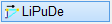
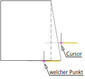
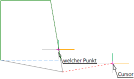

")
")
Mit dem Verschieben des Linienpunktes werden die an diesem Punkt anschließenden Linien mitgeführt.
Die Richtung wird wie bei [Konst1 | Linien | Puvers] nicht verändert.
So wird's gemacht:
§Klicken Sie den zu verschiebenden Anfangs- oder Endpunkt einer Linie an. [Welcher Punkt].
In dieser Funktion werden nur Anfangs- und Endpunkte gefangen.
§Wählen Sie, wie der Linienpunkt verschoben werden soll:
[Wert eing.] |
Eingabe eines Wertes. §Geben Sie den Verschiebebetrag ein und bestätigen Sie die Eingabe mit der Eingabetaste. Für Verschiebungen in Richtung der negativen Koordinatenachsen geben Sie den Betrag mit negativem Vorzeichen "-" an. |
[Punkt andr.] |
Übernahme eines Wertes oder Eingabe einer Differenz. Ohne Differenzangabe (Retaus) §Klicken Sie einen Punkt an, dessen Koordinate Sie übernehmen möchten. Mit Differenzangabe (Retan) §Klicken Sie die Bezugslinie an und geben Sie die Differenz mit dem entsprechenden Vorzeichen ein. Bestätigen Sie die Eingabe mit der Eingabetaste. |
[frei] |
Freies Verschieben. Wenn Sie den Cursor bewegen, wird Ihnen eine Vorschau angezeigt. §Bewegen Sie den Cursor an die gewünschte Stelle und klicken Sie einen beliebigen Punkt auf der Zeichenfläche oder einen Fangpunkt an. |
Die am angeklickten Anfangs- oder Endpunkt anschließenden Linien werden auf den neuen Endpunkt verzogen.
Beispiel:
 |
 |
Der Endpunkt der horizontalen Linie wurde angeklickt. |
Der Endpunkt der vertikalen Linie wurde angeklickt. |
Zugehörige Referenzen: